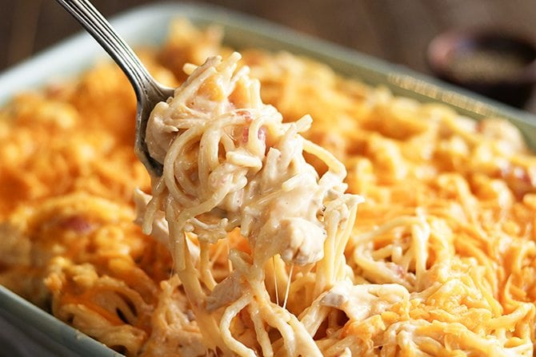

Chicken Spaghetti

Description
This dish has a wonderful Southern snap and yet is smooth and hearty! A great way to use last night's leftover chicken!
Ingredients
- 12 ounces of pasta
- 2 cups chopped cooked chicken breast
- 1 can or 10.75 ounces condensed cream of chicken soup
- 1 can or 10 ounces diced tomatoes with green chile peppers
- 8 ounces processed cheese, cubed
- salt and pepper
Steps
- Bring a large pot of lightly salted water to a boil.
- Cook pasta in the boiling water, stirring occasionally, until tender yet firm to the bite, 4 to 5 minutes.
- Add chopped chicken, condensed soup, diced tomatoes with chile peppers, processed cheese, mushrooms, salt, and pepper.
- Cook and stir over low heat until cheese is melted and mixture is heated through, about 5 minutes.